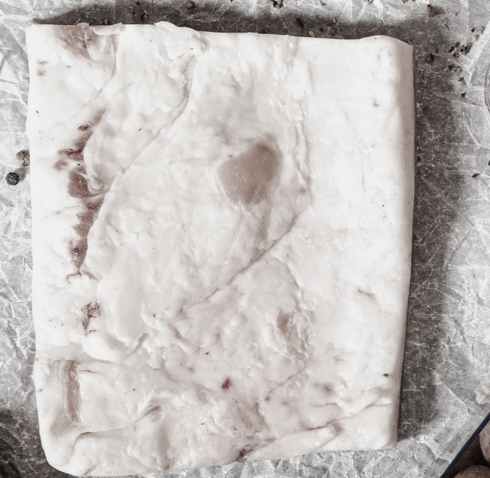
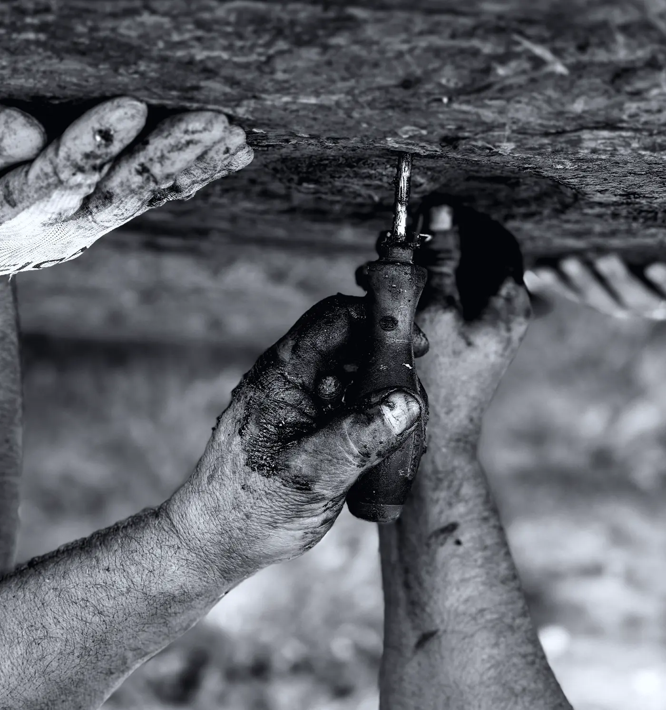
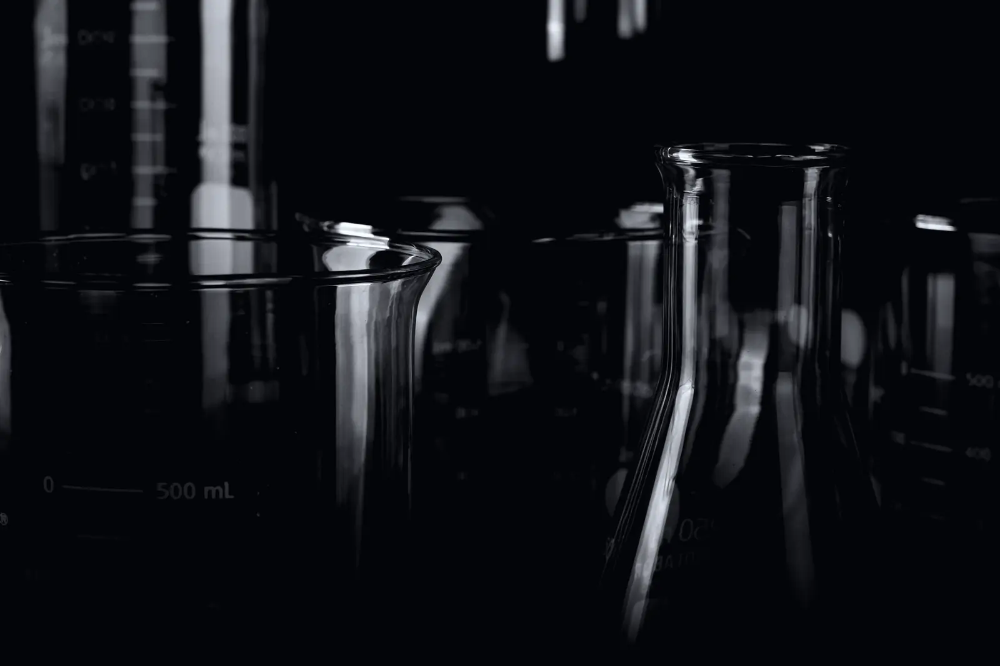
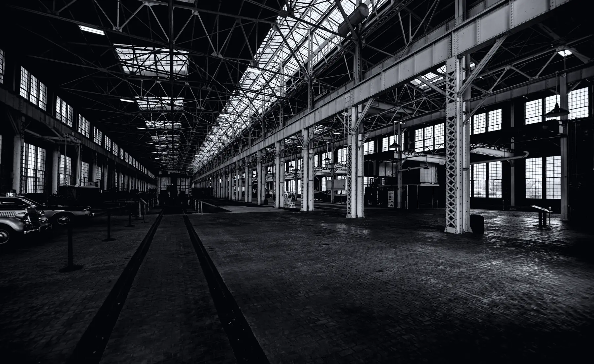

Est. 2026 · Arch 41, Deptford SE8
An eau de parfum rendered from beef suet.
Fourteen kilos of suet from Smithfield, boiled with water and salt for four hours, skimmed twice, pressed through calico, then left nine weeks in glass in the dark. One thousand bottles. Fifty millilitres each.
Scroll to render
£185 · 50 ml
- Material Beef suet
- Weight 14.00 kg
- State Solid, opaque
- Cost £3.20 a kilo
The same substance, told twice.
- Material Eau de parfum
- Volume 1.40 L
- State Clear, tinctured
- Cost £3,700 a litre
00% · 18°C
Render 0 per cent. Stage: SOLID.
The photograph above is graded two ways at once. Above the melt line it is the raw material: cold, grey, opaque. Below the melt line the same pixels are the finished parfum: warm, translucent, lit from inside. Scrolling raises the line.
02 — The ledger
Every fact about this bottle is printed twice.
Once in the register of the material, once in the register of the perfume. Nothing in the left column is softened for the right one. It is the same afternoon either way.
Beef suet · Smithfield offcuts · kidney grade
Eau de parfum, fifty millilitres
£3.20 a kilo, collected Tuesdays
£185 a bottle, one thousand made
Water, salt, four hours over low gas
Nine weeks in glass carboys, in the dark
Skimmed twice. The cracklings go to the dog.
Top: green mandarin, black pepper, wet slate
Poured through calico. Then poured through it again.
Heart: orris butter, cut hay, a thread of smoke
Sets hard by morning. White. Odourless.
Base: labdanum, beeswax, tonka, warm sheepskin
Candles. Soap. Lamp oil. Keeping people alive.
Something to wear on a Thursday.
03 — The works
Arch 41, Deptford, since 2026

Four hours, and somebody has to stand there
The pot cannot be left. Impurities rise in a grey collar around the rim and have to come off with a ladle before they cook back in. This is the part no amount of money makes shorter.

Nine weeks, and nothing to look at
Clarified tallow takes scent the way butter takes garlic — completely, and slowly. The carboys go under the bench in October and are not touched until the second week of December.
One thousand, filled by two people
Glass from a works in Knottingley, filled by hand at forty-eight bottles an hour. When the batch is gone there is not another one until the following October.
“People ask whether you can smell the fat. You cannot. That is the entire craft, and it took us two years and about four hundred kilos to be able to say it.”
— Marta Ilves, who renders everything that leaves this arch

04 — The note
Warm, close, and faintly of a kitchen you have been happy in.
Tallow gives a perfume something almost nothing else does: a body that sits on skin rather than above it. It does not project across a room. It stays about an arm's length away and lasts nine or ten hours, which is a different and better kind of presence.
The top is sharp and short — green mandarin cut with black pepper, over something cold and mineral that reads as wet slate. Twenty minutes in, the orris arrives and the whole thing settles: powder, cut hay, a thread of smoke that is not smoky. What it leaves behind after dinner is labdanum, beeswax and warm sheepskin, which is to say it ends up smelling like the material it started as, refined past the point of recognition.
 Plate 06 — the tincture rack, week seven
Plate 06 — the tincture rack, week seven
Batch 01 · rendered October, filled December
£185 50 ml eau de parfum · 1,000 bottles · 22% concentration